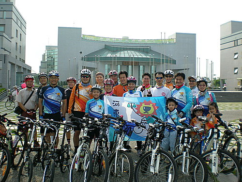
到你的田地和花園去，你就會知道蜜蜂的快樂，就是在於採蜂蜜。
花的快樂就是給蜜蜂花蜜。
因為對於蜜蜂而言，花就是生命的泉源。
蜜蜂就是花的使者，是傳達愛的。
對於蜜蜂和花朵，給予快樂和接受快樂，是需要，也是狂歡。
──摘自紀伯倫《先知》〈快樂〉篇
時間：97.8.31 7:30am集合 天氣：晴
集合地點：澄清湖棒球場
參加者：隊員及眷屬
親子路線：澄清湖棒球場出發→公園路→環湖路→文前路→右轉自強路→左轉松藝路→園山路→左轉澄清路→右轉大埤路→回至澄清湖棒球場
由於當時人潮、車潮大量擁入棒球場，車隊被分作兩路，一路在棒球場勞工育樂中心集合，另一路已一馬當先到澄清湖旁攬勝並等待會合。
▼棒球場圓形廣場集合
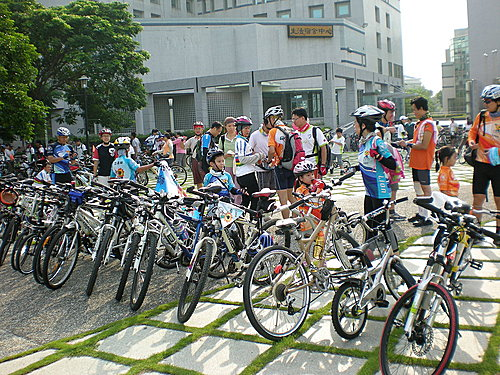
▼另一是在環湖路上之小獅家族，於環湖路上等待了n分鐘 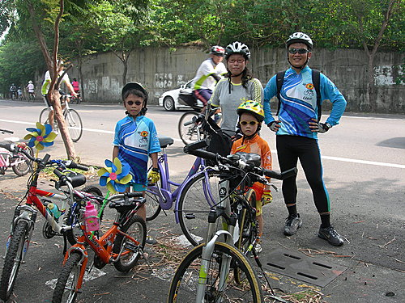
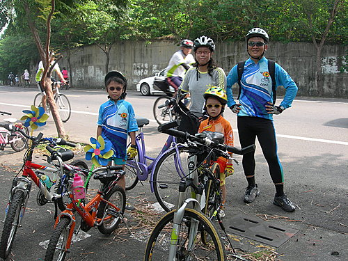
▼圓形廣場上堅強陣容 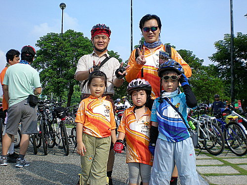
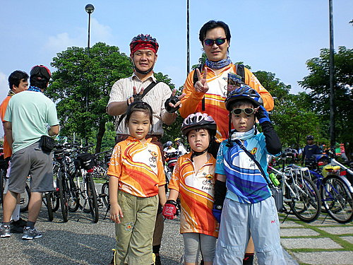
▼阿超與阿揚二家族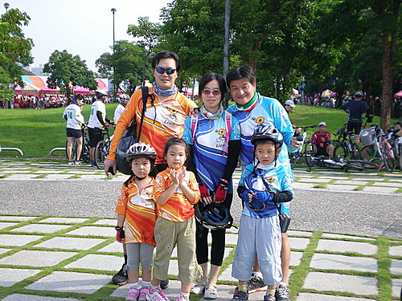
▼眾家族陸續來到環湖路上再次集合
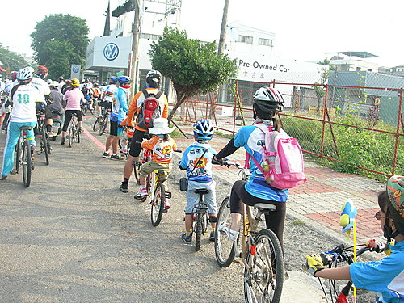
▼林大俠
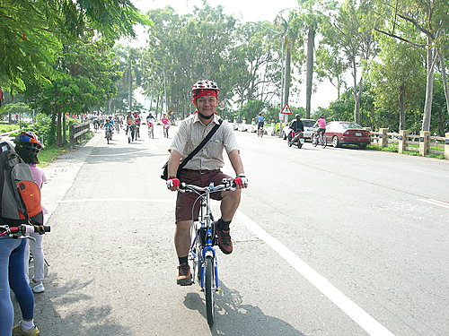
▼volvo騎士吳大哥，專程趕來為河東獅的故障車進行道路救援服務，非常感恩！擬擇期聘請吳大哥為河東獅車友講授自行車之維修保養及分享騎車經驗。
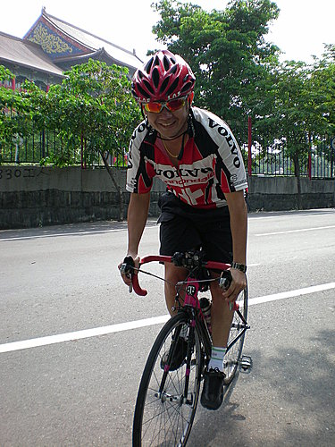
▼Michael
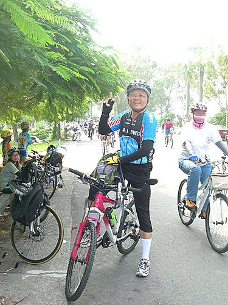
▼Kim
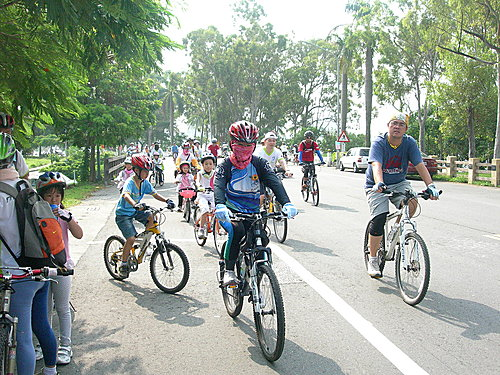
▼阿超家族
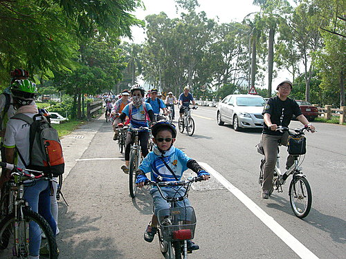
▼親子車真棒！
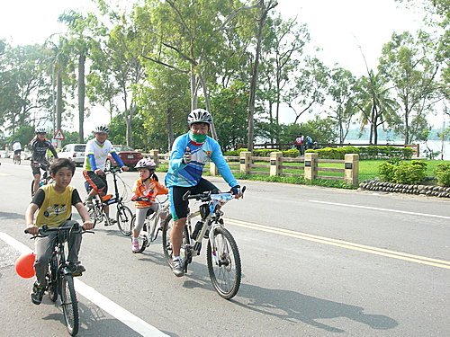
▼孩子經過春天的祝福、夏天的洗禮，更懂得如何和爸媽同騎。 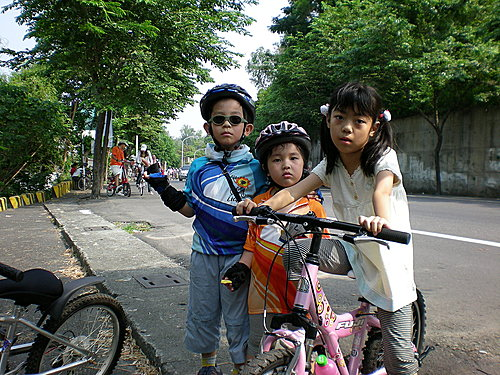
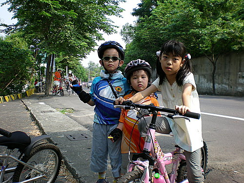
▼阿祥家族
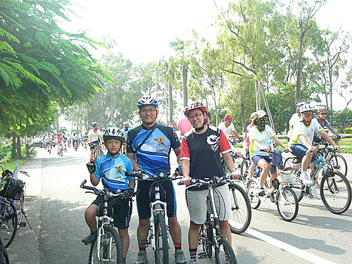
▼阿芳家族
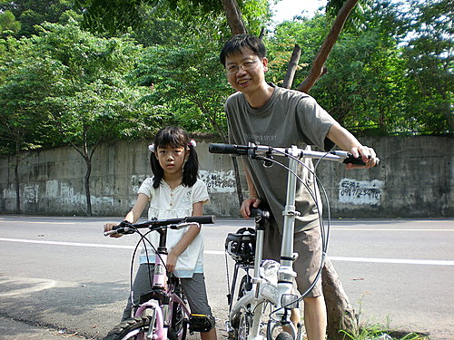
▼阿揚和心愛的女兒一起騎自行車，今天車子有些故障，只好偶爾下來走。
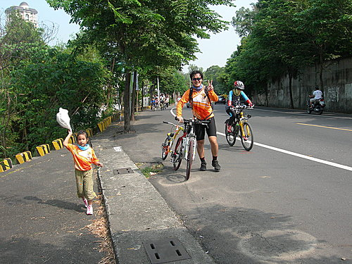
▼河車獅選手阿宏的參與，讓這次逍遙遊更為圓滿。 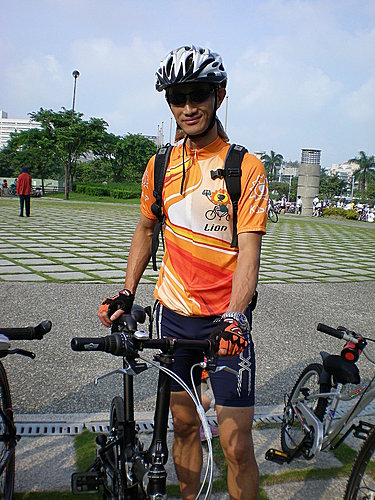
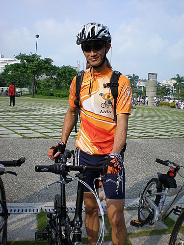
▼小小獅架式十足，是未來之星 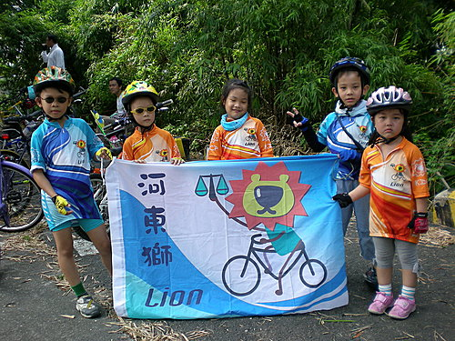
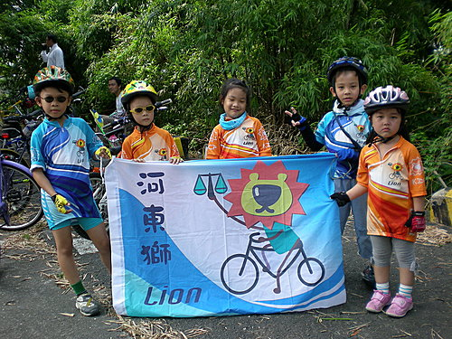
▼最重要的是我們的好友大力的策劃這次的活動
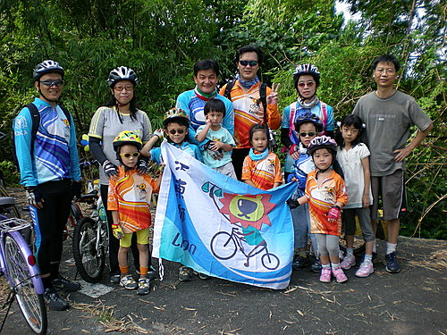

相約騎自行車與一般的運動最大不同點在於，騎自行車的過程中重在互相鼓勵和照顧，而大部分的運動，總是得互相廝殺，分出高下。因此，騎自行車是令人愉悅的運動。
不能環島，也可以環湖；
再忙，也要全家出來運動。
期待不久的將來再相會──飛越臺灣海峽